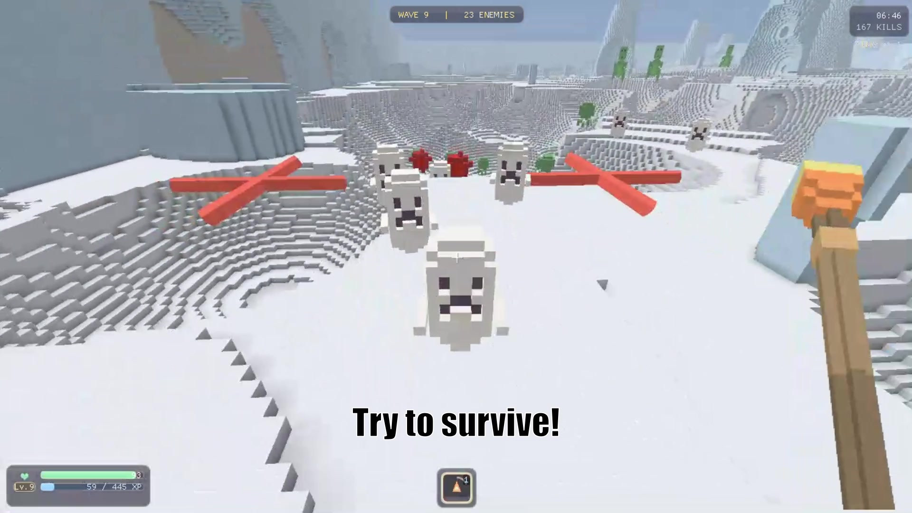
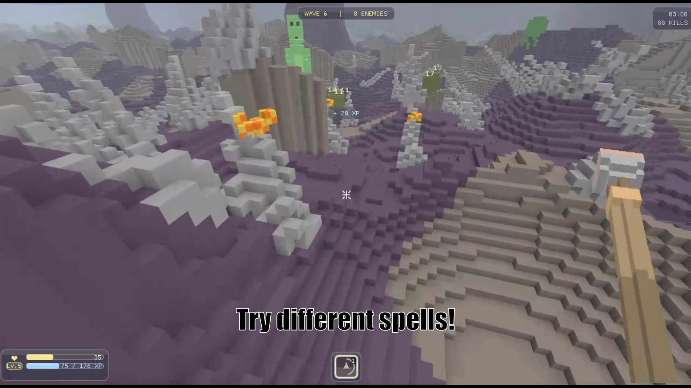
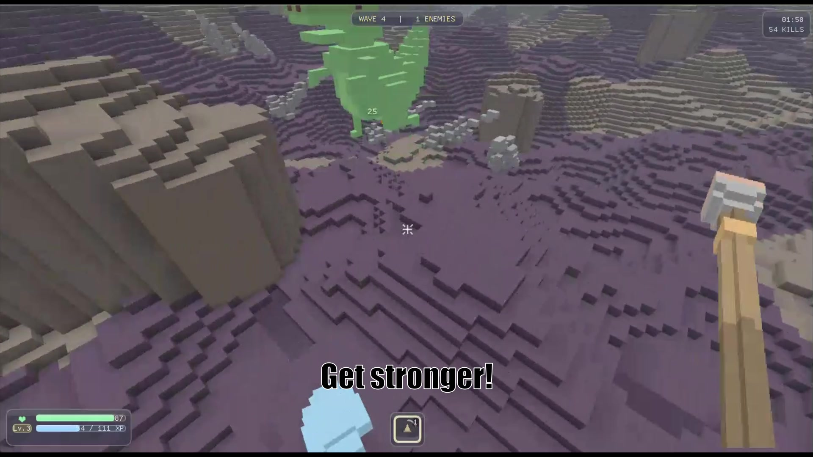

Solo-Projekt · GameLab 3 · Custom Engine · C++20 & Vulkan
Voxel Survivors
First-Person Wave-Survival-Shooter auf einer selbstgeschriebenen Voxel-Engine. Terrain ist in Echtzeit komplett zerstörbar.
- Engine von Grund auf: C++20 mit Vulkan-Compute-Raytracing — DAG für statische Geometrie plus Sparse-Voxel-Octrees pro Chunk.
- Drei Magieschulen: Feuer, Blitz, Erde — je zwei alternative Level-4-Fähigkeiten (z. B. Meteor Storm vs. Firestorm).
- Zerstörung: Explosionen, Strahlen und Erdspitzen tragen Terrain in Echtzeit ab.
- Expo-tauglich: Idle-Screen, Auto-Reset, persistenter High Score, One-Step-Deploy für Messestände.
- Mein Anteil: Engine, Gameplay-Systeme und Dokumentation (Handbuch, Doxygen-API-Docs).
C++20VulkanCMakeGLMDear ImGuiCatch2MagicaVoxel